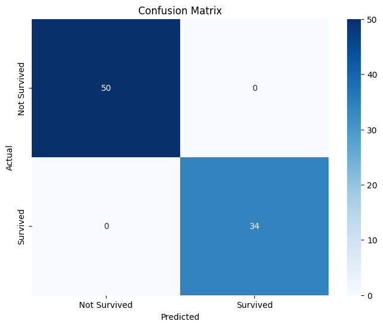
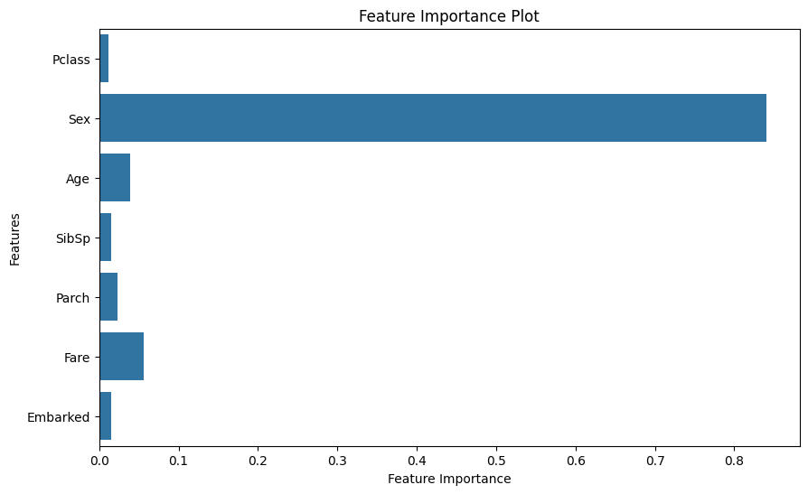

Evaluation Metrics
Accuracy: 0.83
Precision: 0.82
Recall: 0.79
F1-Score: 0.80
Prediction Visualizations
 About the Project
This project uses a Random Forest classifier trained on the Titanic dataset to predict passenger survival. Features include age, gender, passenger class, fare, and family details. Preprocessing included normalization, encoding, and handling missing data.